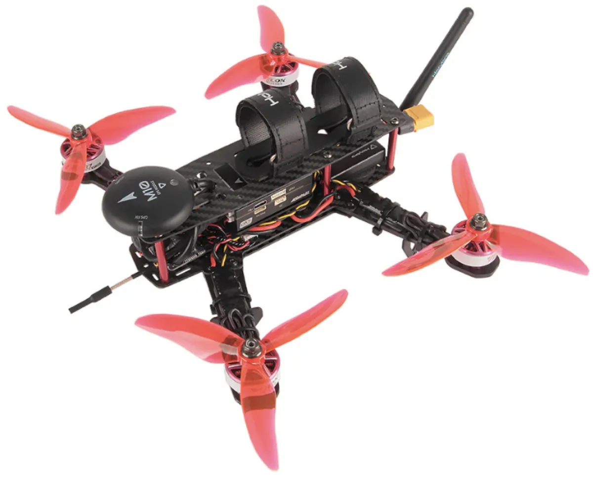
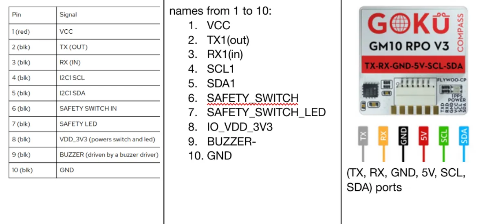
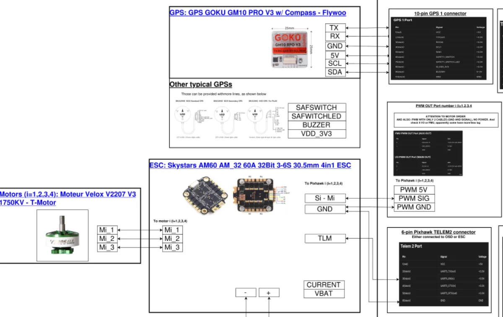
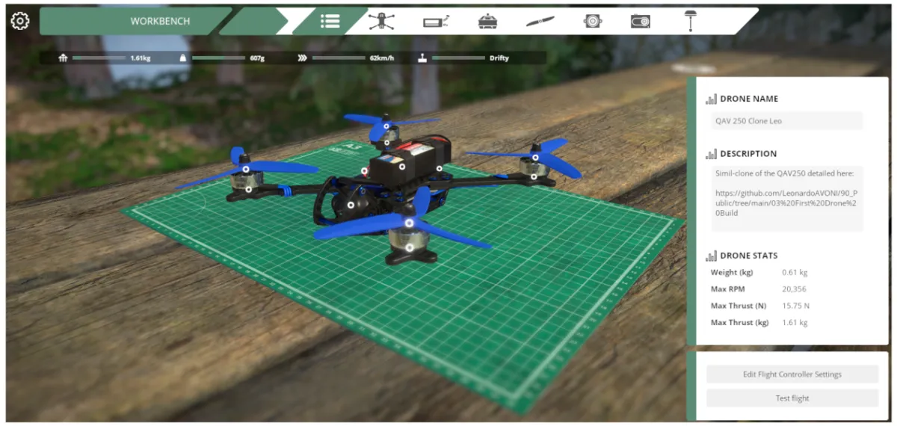

First UAV Build:
Component Selection
A full QAV250 quadrotor design: component selection and early flight sim

The QAV250 kit from HolyBro — the target build platform for this project. Credits: HolyBro.
Motivation
My background is in mechanical and aerospace engineering; I handle well aeroelasticity, fluid mechanics and flight dynamics simulation in general. Drone hardware and embedded software were a blind spot I wanted to close. Rather than following a kit tutorial, I decided to go through the full build pipeline independently: define requirements, select and purchase components, assemble and wire the airframe, configure the autopilot, validate in simulation, and fly for real.
The platform of choice is a QAV250 — a 250 mm motor-to-motor quadrotor running PX4 on a Pixhawk 6C Mini. The goal was never performance optimisation; it was to develop genuine end-to-end familiarity with UAV design, from bill of materials to autonomous flight.
⚠️ Regulatory note: always check and comply with your local drone regulations before flying. Rules vary significantly by country, area, and aircraft weight — it is entirely your responsibility to know and follow them. I take no responsibility for your build, your flights, or any consequences arising from either.
Project Stages
The project is documented across four stages:
Platform Choice: Why the QAV250?
The QAV250 is a 250 mm motor-to-motor diagonal quadrotor — compact, well-documented, and widely used in the hobbyist and educational community. The choice was driven by a few practical constraints:
- Safety: Smaller props mean less stored kinetic energy. Easier to test indoors and in constrained environments.
- Cost: Components are cheaper and easier to replace when something inevitably goes wrong.
- Learning focus: The goal is to understand the full stack — from component selection to autonomous flight. A 250 mm frame is plenty for that. There is no point over-engineering this.
To be explicit: this project is not chasing maximum flight time, racing performance, or any particular design optimization. It is about reliably flying something and understanding how it all works.
Flight Controller & Autopilot: PX4 + Pixhawk 6C Mini
The flight controller chosen is the Pixhawk 6C Mini, running PX4 autopilot firmware. The reasons for this combination are laid out in detail in the component selection report below, but the short version is: PX4 is open-source, extensively documented, well supported by QGroundControl and Gazebo for simulation, and the Pixhawk 6C Mini is a capable, compact board that fits the QAV250 frame. ArduPilot would have been an equally valid choice — the firmware can be swapped later if needed.
Component Selection Overview
All component choices — frame, motors, ESCs, flight controller, radio system, battery, charger, and ground station hardware — are documented in the PDF report below. This includes the rationale behind each choice, compatibility checks, and the wiring scheme tying everything together. A few things worth noting:
- The RC link uses ELRS (ExpressLRS), an open-source long-range RC protocol with very low latency. Getting it to play nicely with PX4 required some extra attention — covered in the Real Software & Flight page.
- The component list includes both drone-specific hardware and ground station gear (battery charger, etc.), since those are equally necessary to actually operate the thing.
- If you are doing a similar build today, some components — especially video transmission systems — evolve quickly. Keep an eye on current recommendations rather than blindly copying this list.

Component selection and wiring analysis for the GPS module — understanding connector pinouts and interface compatibility before committing to a purchase.

A portion of the wiring scheme produced alongside the component selection, mapping all electrical connections across the drone stack.
Cost Summary
The table below tracks cumulative spending, including shipping and taxes to Toulouse, France. This reflects a real-world budget build — no sponsorships, no bulk discounts.
| Date | Items | Cumulative Total (€) |
|---|---|---|
| 11/2025 | Primary components — drone hardware (e.g. ESCs, motors, FC) and support gear (e.g. battery charger) | 540 |
| 01/2026 | Additional GH1.25 10P pre-crimped cables (needed for wiring adjustments during assembly) | 548 |
While Waiting: Getting Simulator Time on the Controller
The RC transmitter was one of the first items to arrive. Rather than let it sit idle while the rest of the components shipped, I installed Liftoff — a drone racing simulator — to start building muscle memory with the sticks. The choice was between Liftoff and Uncrashed, as both seem to provide more realistic physics rather than just gaming experience. This turned out to be genuinely useful for learning how to manually fly quadcopters (constantly compensating throttle for instance).

A QAV250-equivalent model in the Liftoff simulator — used to get initial controller feel and practice manual flight before the real build was complete.
Documentation
The full component selection rationale, specifications, and wiring scheme are available below.